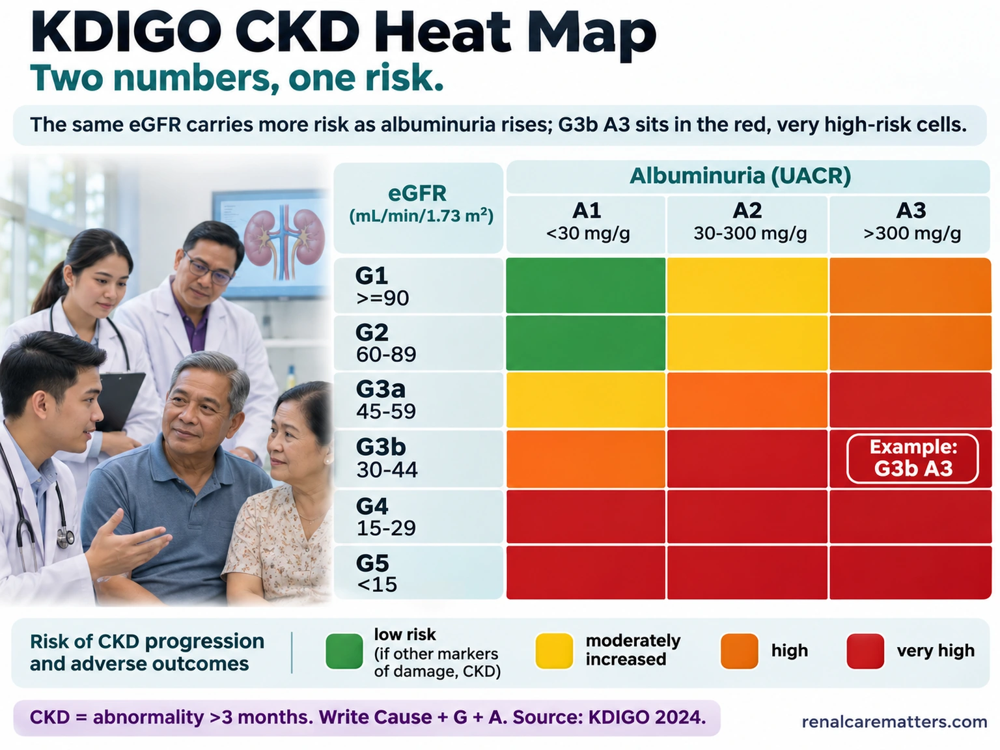
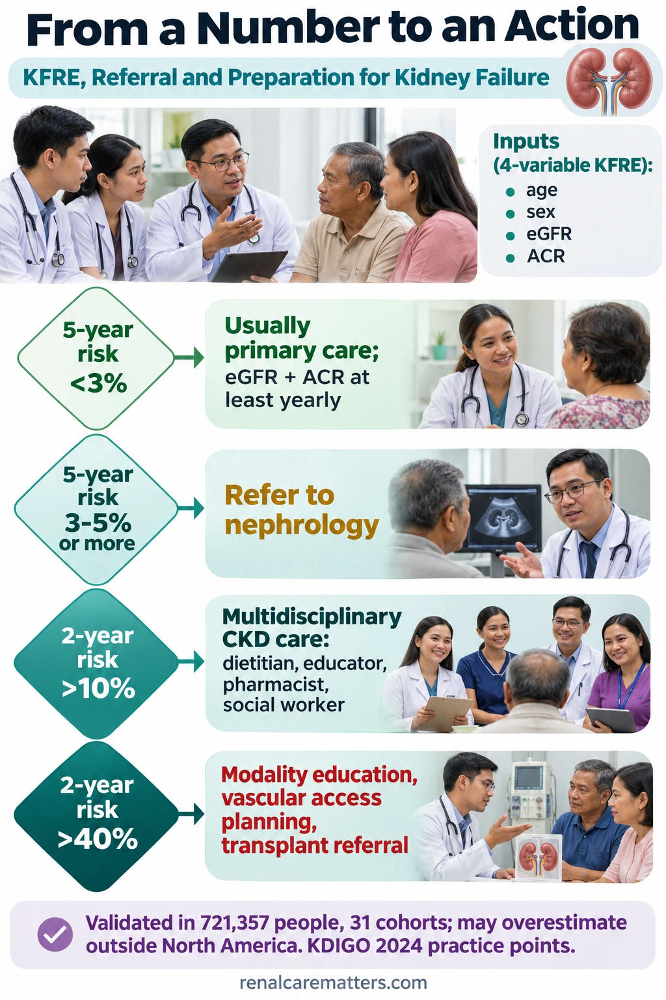

Confirm chronicity and cause, stage by GFR and albuminuria, and time referral with the kidney failure risk equation.
PublishedNailathalaGipatikPepalwal:ReferencesMga SanggunianMga TinubdanReng Reperensya:10Audience: Adult and pediatric nephrology fellows · internal medicine and pediatric residents · medical interns on medicine, pediatrics, ICU and dialysis rotations, and residents who work shifts as dialysis physicians on dutyRead timeOras ng pagbasaOras sa pagbasaOras ning pamamasa:
Training track for nephrology fellows, residents and medical interns
Study material for medical interns, residents and fellows. It explains the reasoning behind common decisions; it is not a protocol and gives no drug doses. Doses, rates and order sets come from current guidelines, product labels, your institution’s approved protocols and your supervising physician. Benefit rules change: confirm them on the date of service. Every case is fictional.
Learning objectives
After this module you should be able to
Intern: Stage chronic kidney disease (CKD) by glomerular filtration rate (GFR) category and albuminuria category, and present the cause, the stage and the trend in one sentence.
Resident: Confirm chronicity and look for the cause, then use the kidney failure risk equation (KFRE) with the Kidney Disease: Improving Global Outcomes (KDIGO) 2024 thresholds to time referral and preparation.
Fellow: Run a CKD clinic with risk-based follow-up: monitoring intervals, cardiovascular-kidney-metabolic risk, referral criteria and a written plan the primary care team can follow.
Pre-testBefore you read, answer the 5 self-assessment questions and note your score. After the module, select New set of questions and compare. The difference is what you learned; the questions you still miss are what to reread.
Start here
The big picture, in plain words
Your role · the CKD patient in the outpatient clinic and on the wardAs an intern, you collect the creatinine values, urine tests and medicine list over time, stage the CKD correctly and present it without confusing a single bad day with a chronic disease. As a resident, you prove chronicity, look for the cause, estimate the risk of kidney failure and decide, with your attending, whether this patient needs a nephrologist now, later or at all. As a fellow, you run the clinic: you set the follow-up interval by risk, you start the conversation about kidney replacement early enough, and you write plans that a busy primary care physician in the province can carry out.
In plain wordsThink of the kidneys as a large company with about two million workers, the nephrons. Lose a few hundred thousand and the company still meets its quota, because the remaining workers do overtime. The quarterly report (the creatinine) looks normal until the workforce is small. A leaking factory floor (albumin in the urine) is often the first sign that something is wrong inside.
The picture has a limit. Overtime in the kidney is not free. Each surviving nephron filters more (single-nephron hyperfiltration), its glomerular pressure rises, and the higher pressure injures the podocytes and the filtration barrier. Albumin that crosses the barrier is reabsorbed by the proximal tubule, and that work itself drives inflammation and scarring. So albuminuria is both a marker of damage and a contributor to it. Creatinine, meanwhile, depends on muscle mass and tubular secretion as well as filtration: a small, older Filipino woman can have lost half her filtration with a creatinine still inside the laboratory’s normal range. CKD is therefore defined by two measurements, not one, and staged by both.
Figure 1 · Key numbers
Definition (KDIGO 2024)Abnormalities of kidney structure or function present for more than 3 months, with implications for health
CKD thresholds (KDIGO 2024)GFR below 60 mL/min/1.73 m² and/or albumin-to-creatinine ratio (ACR) 30 mg/g (3 mg/mmol) or more
Risk equation (KDIGO 2024)Use an externally validated equation for absolute kidney failure risk in CKD G3 to G5 (1A)
Referral (KDIGO 2024)A 5-year kidney failure risk of 3% to 5% can prompt nephrology referral (practice point)
Preparation (KDIGO 2024)A 2-year risk above 40% can guide modality education, access planning and transplant referral (practice point)
KFRE accuracy (meta-analysis, 721,357 people)C statistic 0.90 at 2 years and 0.88 at 5 years
Most people with CKD will never need dialysis; far more will have a heart attack, a stroke or heart failure first. A few will lose kidney function quickly and arrive at the emergency room uremic, with no access and no plan. Your work is to tell these groups apart early, to treat the many for cardiovascular and kidney protection, and to bring the few to a nephrologist while there is still time to prepare.
Opening case · fictional
Case: The jeepney driver with a “slightly high” creatinine
Tuesday, 10 a.m., the medicine outpatient department of a public hospital in Malolos, Bulacan. Mr. Romeo Dizon, 52, drives a jeepney on the Malolos–Meycauayan route from 5 a.m. to 7 p.m., six days a week. He has had type 2 diabetes for 11 years and high blood pressure for 6. He takes metformin and losartan when he can buy them, and a “kidney cleanse” capsule his neighbor sells. A barangay health center referred him with a note: “Crea slightly high, pls eval.”
You are the second-year resident. His creatinine today is 2.05 mg/dL, which the calculator turns into an estimated GFR (eGFR) of 38 mL/min/1.73 m². His urine ACR is 480 mg/g. He shows you a phone photo of a creatinine of 1.6 mg/dL from a private laboratory 14 months ago. His blood pressure is 156/94 mm Hg, his glycated hemoglobin (HbA1c) is 8.4%, and his urinalysis shows 3+ protein, no red cells and no casts. He has no eye examination on record. His wife, Mrs. Lorna Dizon, asks the question every family asks: “Doc, magda-dialysis na po ba siya?” (Will he need dialysis now?)
The intern on your team has written “CKD stage 3” and is about to move on to the next patient.
Before reading on, decide:
What is his full CKD classification, and is it really chronic?
What is his risk of kidney failure, and does he need a nephrologist now?
What will the clinic plan say, and how often will you see him?
Keep your answers in mind. The lesson gives you what you need, and the case review near the end shows one sound response.
Lesson · part 1
Defining and staging CKD: two numbers and a cause
The Kidney Disease: Improving Global Outcomes (KDIGO) 2024 guideline defines chronic kidney disease (CKD) as abnormalities of kidney structure or function, present for more than 3 months, with implications for health.1 In practice the two commonest markers are a GFR below 60 mL/min/1.73 m² and an albumin-to-creatinine ratio (ACR) of 30 mg/g (3 mg/mmol) or more. Other markers of damage count too: abnormal urine sediment, tubular disorders, structural abnormalities on imaging, abnormalities on biopsy, or a kidney transplant.1
KDIGO classifies CKD by Cause, GFR category and Albuminuria category (the cause, GFR category, and albuminuria category (CGA) system).1 The cause comes first in the label because it decides treatment. The two numbers come next because each predicts outcomes independently: at any eGFR, more albumin means more risk of kidney failure, cardiovascular death and death from any cause.
GFR category
eGFR (mL/min/1.73 m²)
Albuminuria category
ACR
G1
≥90
A1 (normal to mildly increased)
<30 mg/g (<3 mg/mmol)
G2
60–89
A2 (moderately increased)
30–300 mg/g (3–30 mg/mmol)
G3a
45–59
A3 (severely increased)
>300 mg/g (>30 mg/mmol)
G3b
30–44
G1 and G2 count as CKD only with another marker of damage, such as albuminuria
G4
15–29
G5
<15
Which eGFR. Use a validated creatinine equation, now the race-free Chronic Kidney Disease Epidemiology Collaboration (CKD-EPI) 2021 equation in most laboratories.2 Creatinine-based eGFR misleads in people with very low or very high muscle mass, amputations, cirrhosis or wasting. KDIGO recommends using an equation that combines creatinine and cystatin C (eGFRcr-cys) in clinical situations when the creatinine estimate is less accurate (1C), and, where cystatin C is available, using the combined estimate to assign the GFR category (1B).1 In many Philippine provinces cystatin C is not on the laboratory menu, or the family pays for it out of pocket. Then state the limitation in your note, look for other evidence, and do not stage a cachectic patient on creatinine alone without saying so.
Proving chronicity. One abnormal value is not CKD. KDIGO lists the ways to prove a duration of at least 3 months: past eGFR values, past urine tests, imaging (small kidneys, thin cortex), biopsy findings, or a history that explains a long-standing process.1 After acute kidney injury (AKI), wait 3 months after discharge before diagnosing CKD.1 The phone photo, the barangay health center logbook, the old discharge summary in a plastic envelope: in the Philippines, chronicity is often proven by detective work, not by the hospital information system.
Albuminuria needs confirming. Urine albumin varies from day to day with fever, exercise, a high-protein meal, menstruation, urinary infection and uncontrolled glucose or blood pressure. KDIGO notes that rises beyond 100% or falls beyond 50% are probably beyond random fluctuation.1 Repeat a high ACR on an early-morning sample before you label a patient A2 or A3, and record the method. A dipstick reading of protein is a screen, not a category.
Trap
Why it misleads
What you do
A single high creatinine during an illness
AKI or acute kidney disease, not CKD
Repeat after recovery; label AKI until 3 months have passed
“Normal” creatinine in a small, older woman
Low muscle mass hides lost filtration
Read the eGFR, not the creatinine; consider cystatin C
Creatinine rise after a gym diet with protein shakes or creatine
Generation, not filtration, has changed
Ask about supplements; repeat after stopping
One ACR during a urinary infection
Inflammation raises albumin
Treat, then repeat
“CKD stage 3” with no albuminuria category
Hides half the risk
Always write G and A, and the cause
RememberWrite CKD as cause, G category and A category, with the date range that proves chronicity. “CKD stage 3” alone is an incomplete sentence.

Figure 2. Two numbers, one risk. The same eGFR carries more risk as albuminuria rises; G3b A3 sits in the red, very high-risk cells.
Lesson · part 2
Estimating risk: the heat map, the KFRE and the heart
The KDIGO heat map turns the two numbers into colors: green (low risk), yellow (moderately increased), orange (high) and red (very high). The colors summarize pooled data from large cohorts on kidney failure, cardiovascular death, AKI and death from any cause.1 They are a population picture. They do not tell Mr. Dizon his own chance of reaching dialysis, and they do not use his age.
The kidney failure risk equation (KFRE). Tangri and colleagues derived the KFRE in 3,449 Canadian patients with CKD G3 to G5 referred to nephrologists, and validated it in a second cohort of 4,942. The most accurate model used eight laboratory and demographic variables (C statistic 0.917 in development, 0.841 in validation); a simpler four-variable model uses age, sex, eGFR and ACR.3 An individual participant meta-analysis of 31 cohorts, 721,357 people with CKD G3 to G5 in more than 30 countries, found excellent discrimination (C statistic 0.90 at 2 years, 0.88 at 5 years). Calibration was adequate in North America, but the original equation overestimated risk in some non-North American cohorts, and a calibration factor improved it.4 No Philippine cohort was among them. Read the result as an estimate with a margin, and expect it may run high for Filipino patients.
KDIGO 2024 recommends using an externally validated risk equation to estimate the absolute risk of kidney failure in people with CKD G3 to G5 (1A). Its practice points (ungraded) attach actions to thresholds: a 5-year risk of 3% to 5% can be used to decide on nephrology referral; a 2-year risk above 10% can time multidisciplinary care; and a 2-year risk above 40% can guide modality education, preparation for kidney replacement therapy (KRT) including vascular access, and transplant referral.1 These sit alongside, not in place of, the eGFR and ACR criteria and clinical judgment.
KFRE result
What it can trigger (KDIGO practice point)
What you do in the clinic
5-year risk below 3%
Care can usually stay in primary care if no other criterion applies
Treat risk factors; repeat eGFR and ACR at least yearly
5-year risk 3% to 5% or more
Nephrology referral
Refer with the trend, the cause workup and the medicine list
2-year risk above 10%
Multidisciplinary CKD care
Dietitian, diabetes educator, social worker, pharmacist
Hemodialysis, peritoneal dialysis, transplant and conservative care discussed with the family; vein preservation
Arithmetic illustration, not a target. For Mr. Dizon (52, male, eGFR 38, ACR 480 mg/g), the four-variable KFRE with the North American calibration gives a 5-year risk of about 15% and a 2-year risk of about 5%. With the non-North American calibration factor, both are a little lower. Run the site calculator yourself; do not copy these figures into a chart.
The heart comes first in most patients. The same heat map predicts cardiovascular death, and in the yellow and orange cells cardiovascular events are more common than kidney failure. The American Heart Association (AHA) cardiovascular-kidney-metabolic (CKM) advisory places CKD inside one syndrome with obesity, diabetes and heart disease, and stages it from 0 (no risk factors) to 4 (clinical cardiovascular disease). Moderate- to high-risk CKD by the KDIGO heat map sits in stage 2, and very high-risk CKD counts as a risk equivalent in stage 3.5 CKM staging is a framework for prevention, not trial evidence that staging itself improves outcomes. The AHA Predicting Risk of cardiovascular disease EVENTs (PREVENT) equations, derived and validated in more than 6 million US adults aged 30 to 79, include eGFR and can add ACR; adding ACR improved calibration in people with ACR above 300 mg/g.6 PREVENT has not been validated in a Philippine population; use it as a structured estimate, not a verdict.
On the ward · fictional
Aling Mercedes, 81, from San Fernando, Pampanga, has an eGFR of 31 and an ACR of 12 mg/g, stable for six years. The KFRE gives her a 5-year risk well under 3%. Her daughter wants a dialysis access “just in case.”
You explain that she is far more likely to die of her heart disease than to need dialysis, and that the plan is blood pressure, her statin and avoiding nephrotoxins.
What this shows. A low eGFR in an old, stable patient without albuminuria is a different disease from the same eGFR in a 52-year-old with heavy albuminuria.
RememberPut a number on kidney failure risk in every patient with CKD G3 to G5, and say out loud which is more likely: the heart or dialysis.

Figure 3. From a number to an action. KDIGO 2024 practice points tie KFRE thresholds to referral and preparation, alongside eGFR, ACR and judgment.
Lesson · part 3
Finding the cause: is this really diabetic kidney disease?
In the Philippines, diabetes and hypertension are the leading causes of kidney failure. That is exactly why the label is applied too quickly. A patient with diabetes can also have immunoglobulin A (IgA) nephropathy, membranous nephropathy, lupus, obstruction from an enlarged prostate, stones, reflux nephropathy, an analgesic or herbal injury, or a hereditary disease. Each has its own treatment, and some are reversible.
The causal chain of diabetic kidney disease (DKD) explains which features fit. Years of hyperglycemia raise sodium-glucose reabsorption in the proximal tubule, less sodium reaches the macula densa, tubuloglomerular feedback dilates the afferent arteriole, and glomerular pressure rises (Module 13 traces this). Albuminuria usually rises slowly before the eGFR falls, and the same microvascular injury appears in the retina. A picture that breaks this chain suggests another cause.
Finding
Fits diabetic kidney disease
Suggests another cause
Duration of diabetes
Long, often 10 years or more in type 2 (onset is often uncertain)
Heavy proteinuria within months of diagnosis
Retina
Diabetic retinopathy present
No retinopathy despite heavy albuminuria (especially in type 1)
Urine sediment
Bland
Dysmorphic red cells, red cell casts
Course
Gradual albuminuria, then gradual eGFR decline
Rapid eGFR fall, sudden nephrotic syndrome
Systemic clues
Other microvascular disease
Rash, arthritis, hemoptysis, weight loss, new anemia out of proportion
Imaging
Normal-sized or large kidneys
Asymmetric kidneys, hydronephrosis, cysts
The cause workup at your stage is usually modest and inexpensive: a repeat ACR, a microscopic urinalysis read by someone who knows what a dysmorphic red cell looks like (Module 4), a kidney ultrasound, a fundus examination, a careful medicine and supplement history, and, when the picture suggests it, serologies. Biopsy belongs to the nephrologist and to a patient whose management would change.
The medicine and supplement history. Ask about nonsteroidal anti-inflammatory drugs (NSAIDs) and other pain relievers bought without prescription for back pain from driving or farm work, herbal “kidney cleanse” capsules, lagundi or other decoctions, imported slimming products and anabolic steroids. Write the brand names; bring the bottles if possible. Module 16 covers the nephrotoxic ones.
In childrenThe causes are different: congenital anomalies of the kidney and urinary tract (CAKUT), reflux and hereditary diseases dominate, and diabetes is rare. GFR is estimated with pediatric equations, and albuminuria or proteinuria thresholds and referral criteria are written for children: KDIGO advises referring a child with confirmed albuminuria or proteinuria, persistent hematuria, any sustained fall in eGFR, hypertension, or a urinary tract anomaly.7 Growth, neurodevelopment and the transition to adult care are part of CKD care. See Attending Pediatric Nephrologist, Module 17.
RememberBefore you write “diabetic kidney disease,” check the retina, the sediment, the ultrasound and the speed of decline. If one does not fit, say so and look further.
Lesson · part 4
Referral, follow-up and the clinic plan
Who goes to the nephrologist. KDIGO 2024 lists referral criteria for adults, including a consistent eGFR below 30 mL/min/1.73 m², a consistent ACR of 300 mg/g or more, a 5-year kidney failure risk of 3% to 5% or more, accelerated progression, AKI or an abrupt sustained fall in eGFR, persistent unexplained hematuria with red cell casts, hypertension refractory to four or more agents, persistent potassium abnormalities, recurrent or extensive stones, and hereditary kidney disease.1 A referral is not a transfer of ownership. Most patients will be co-managed: the primary care team carries the daily care, and the nephrologist sets the kidney-specific plan.
How often to check. KDIGO advises assessing albuminuria and GFR at least once a year in people with CKD, and more often as the heat-map risk rises (practice point).1 Draw the trend, not just the latest point. A small early fall in eGFR after starting a renin-angiotensin system inhibitor (RASi) or a sodium-glucose cotransporter 2 (SGLT2) inhibitor is expected hemodynamics; KDIGO advises continuing the RASi unless creatinine rises by more than 30% within 4 weeks (practice point).1 A fall of the same size during dengue season is a different story (Module 9).
Stage of training
What you own in the CKD clinic
Intern
Collect old values (phone photos, logbooks), stage G and A, list every medicine and supplement, present the trend
Resident
Prove chronicity, order the cause workup, run the KFRE, start or adjust kidney protection with the attending, write the referral
Fellow
Set follow-up intervals by risk, lead modality and conservative care conversations, write the shared plan for primary care, audit who is lost to follow-up
Philippine practice. Many patients reach you through a barangay health center or a Philippine Health Insurance Corporation (PhilHealth) Konsulta provider, now part of the PhilHealth Yaman ng Kalusugan Program (YAKAP) primary care program. The published Konsulta laboratory list includes serum creatinine, urinalysis, fasting blood sugar, HbA1c and a lipid profile, but not a urine albumin-to-creatinine ratio.8,9 That gap matters: a dipstick misses moderately increased albuminuria, and without an ACR you cannot place the patient on the heat map or run the KFRE. Where the family cannot pay for an ACR, write the dipstick result honestly, mark the A category as unknown, and plan the test for when it can be done. Diabetic clinics in local government units are a natural place to screen; the fellow can help them set up an annual creatinine-and-ACR day.
The plan the patient carries. Write it in short lines the patient and the next doctor can read: the diagnosis in CGA form, the kidney failure risk in words (“about 15 in 100 over 5 years”), the targets set by the attending, the medicines that protect the kidney and the ones to avoid, the date of the next creatinine and ACR, and what should bring the patient back early. Use Tagalog, Kapampangan, Cebuano or the family’s own language for the spoken explanation. KDIGO has begun a focused update on medications management in CKD; check the guideline page for its status before you teach the current statements as final.10
Stop and callStop and call the attending nephrologist (per unit protocol, but always ask the attending nephrologist for guidance) when you find:
eGFR falling fast, or a new creatinine rise with oliguria
Potassium of 6.0 mmol/L or higher, or severe acidosis
Red cell casts or dysmorphic hematuria with a falling eGFR
New nephrotic syndrome or edema that is not responding
eGFR below 15 mL/min/1.73 m² with no plan for kidney replacement or conservative care
RememberEvery CKD patient leaves your clinic with three things written down: the CGA label, the risk in words, and the date of the next eGFR and ACR.
On the floor
Real situations: problems and solutions
These are fictional but typical. For each one, cover the answer, decide what you would do, then compare. Where a step depends on local rules, your unit’s procedure and your supervisor’s direction come first.
The creatinine on admission
What you see
A 47-year-old farmer from Nueva Ecija is admitted with pneumonia and a creatinine of 2.4 mg/dL. The admitting note says “CKD stage 3b.” No old values exist.
What is likely going on
AKI is as likely as CKD; one value during an acute illness cannot prove chronicity.
What to do
Label it AKI, look for old results (health center, phone photos, a previous employer’s medical), get an ultrasound, and repeat creatinine and ACR after recovery and at 3 months.
Why it matters
A wrong CKD label follows the patient into every future prescription and insurance form.
The bodybuilder with a high creatinine
What you see
A 28-year-old gym instructor in Makati has a creatinine of 1.5 mg/dL on a pre-employment test, an eGFR of 62 and a normal ACR. He takes creatine and a whey supplement.
What is likely going on
Higher creatinine generation from muscle mass and creatine, not necessarily lower filtration.
What to do
Ask him to stop creatine for some weeks and repeat, or estimate GFR with cystatin C if the family can afford it; check the urine.
Why it matters
Creatinine-based eGFR assumes average muscle mass; he is not average.
The dipstick-only clinic
What you see
A rural health unit in Samar refers a 58-year-old woman with diabetes, an eGFR of 41 and “protein trace” on dipstick. No ACR is available.
What is likely going on
Moderately increased albuminuria can be missed by a dipstick; the A category is unknown.
What to do
Write G3b with albuminuria category not measured, plan an ACR when possible, and treat her cardiovascular and kidney risk now.
Why it matters
You cannot run the KFRE or place her on the heat map without an ACR; say so instead of guessing A1.
The family who wants dialysis now
What you see
A 64-year-old retired teacher has an eGFR of 18, a 2-year KFRE risk of 48%, no symptoms and a son working in Dubai who wants “the best.”
What is likely going on
High risk of kidney failure within 2 years; not an indication to start dialysis today.
What to do
Arrange modality education for the family (including the son by video call), transplant discussion, vein preservation and access planning with the attending, and conservative care as an option.
Why it matters
Preparation done early prevents the emergency catheter start that most Philippine dialysis patients still experience.
Field notes
Photograph old laboratory results on the patient’s phone into the chart; they are often your only proof of chronicity.
Write CKD as cause, G and A every time, even on a busy ward round.
Keep the KFRE calculator open in the clinic and say the result in words: “about 15 in 100 over 5 years.”
Ask every CKD patient to bring every bottle, capsule and sachet they take, including herbal products.
Case review
Back to the case: The jeepney driver with a “slightly high” creatinine
Classification and chronicity. He has CKD G3b A3, probably due to diabetic kidney disease with hypertension, not yet proven. Chronicity is supported by the creatinine of 1.6 mg/dL 14 months ago (eGFR about 51) and by heavy albuminuria in a man with 11 years of diabetes, but the ACR should be repeated on an early-morning sample, and an ultrasound and a fundus examination should be done. The sediment is bland, which fits. The “kidney cleanse” capsule must be identified and stopped. The intern’s “CKD stage 3” misses the A3, the cause and the speed of decline, about 13 mL/min/1.73 m² in a little over a year.
Risk and referral. The four-variable KFRE gives roughly a 15% 5-year risk and a 5% 2-year risk with the North American calibration, lower with the non-North American factor. Either way, the 5-year risk exceeds the 3% to 5% referral threshold, and his ACR of 480 mg/g is itself a referral criterion. He needs a nephrologist now, not dialysis now. Tell Mrs. Dizon plainly: he does not need dialysis today, his risk over the next few years is real, and treatment can lower it. Cardiovascular risk is high too, and it deserves the same attention.
The clinic plan. Repeat creatinine and ACR to confirm, ultrasound, fundus examination, potassium and bicarbonate. With the attending: blood pressure control (Module 12), losartan at the highest tolerated dose taken every day, an SGLT2 inhibitor, glycemic control with attention to the metformin dose at his eGFR, and a statin (Module 13). Stop the supplement and NSAIDs. Refer to nephrology with the trend and medicine list, and see him at least every 3 to 4 months while his risk is high, adjusting the interval to his course. Ask whether PhilHealth YAKAP medicines can cut his costs.
Interactive case · fictional
Interactive case: “CKD stage 3, diabetic”: is it?
Work through a shift one decision at a time. The panel at the top changes with what you choose. After each choice you see why it is, or is not, the best move; after a weaker one you can try again or carry on and see where it leads. Your first choice at each step is scored. The score stays on this device and nothing is sent anywhere. In real practice, your unit’s protocol and the people responsible for each decision come first.
Skills lab · with your preceptor
Skills checklist: CKD evaluation, risk and referral
Complete with a preceptor, in clinic or on the ward. Sign-off is local. Your preceptor rates each step as satisfactory, needs practice, or not observed. Steps marked Critical must all be satisfactory before sign-off. This checklist supports supervised learning; your unit’s own procedure and competency form are the authority. A printable version of every checklist is on the trainer page.
Stages CKD by cause, GFR category and albuminuria category, with evidence of chronicity
Identifies when creatinine-based eGFR is unreliable and states the limitation in the note
Runs the four-variable KFRE and explains the result to a patient in plain words
Lists the findings that argue against diabetic kidney disease and orders the matching workup
Writes a referral and a follow-up plan that a primary care physician can carry out
Placement activity. Medicine outpatient clinic, CKD clinic or ward
Self-assessment
Check your understanding
Each visit draws 5 questions at random from this module’s 5-question bank. Choose the single best answer for each, then select Check answers; an explanation appears under the best answer. Select New set of questions for a different mix. A good target is 4 of 5 on two different sets. Nothing you select is sent anywhere; scoring happens in your browser.
Kidney Disease: Improving Global Outcomes (KDIGO) CKD Work Group. (2024). KDIGO 2024 clinical practice guideline for the evaluation and management of chronic kidney disease. Kidney International, 105(4S), S117–S314. https://doi.org/10.1016/j.kint.2023.10.018
Inker, L. A., Eneanya, N. D., Coresh, J., Tighiouart, H., Wang, D., Sang, Y., Crews, D. C., Doria, A., Estrella, M. M., Froissart, M., Grams, M. E., Greene, T., Grubb, A., Gudnason, V., Gutiérrez, O. M., Kalil, R., Karger, A. B., Mauer, M., Navis, G., ... Chronic Kidney Disease Epidemiology Collaboration. (2021). New creatinine- and cystatin C–based equations to estimate GFR without race. The New England Journal of Medicine, 385(19), 1737–1749. https://doi.org/10.1056/NEJMoa2102953
Tangri, N., Stevens, L. A., Griffith, J., Tighiouart, H., Djurdjev, O., Naimark, D., Levin, A., & Levey, A. S. (2011). A predictive model for progression of chronic kidney disease to kidney failure. JAMA, 305(15), 1553–1559. https://doi.org/10.1001/jama.2011.451
Tangri, N., Grams, M. E., Levey, A. S., Coresh, J., Appel, L. J., Astor, B. C., Chodick, G., Collins, A. J., Djurdjev, O., Elley, C. R., Evans, M., Garg, A. X., Hallan, S. I., Inker, L. A., Ito, S., Jee, S. H., Kovesdy, C. P., Kronenberg, F., Heerspink, H. J., ... CKD Prognosis Consortium. (2016). Multinational assessment of accuracy of equations for predicting risk of kidney failure: A meta-analysis. JAMA, 315(2), 164–174. https://doi.org/10.1001/jama.2015.18202
Ndumele, C. E., Rangaswami, J., Chow, S. L., Neeland, I. J., Tuttle, K. R., Khan, S. S., Coresh, J., Mathew, R. O., Baker-Smith, C. M., Carnethon, M. R., Despres, J. P., Ho, J. E., Joseph, J. J., Kernan, W. N., Khera, A., Kosiborod, M. N., Lekavich, C. L., Lewis, E. F., Lo, K. B., ... American Heart Association. (2023). Cardiovascular-kidney-metabolic health: A presidential advisory from the American Heart Association. Circulation, 148(20), 1606–1635. https://doi.org/10.1161/CIR.0000000000001184
Khan, S. S., Matsushita, K., Sang, Y., Ballew, S. H., Grams, M. E., Surapaneni, A., Blaha, M. J., Carson, A. P., Chang, A. R., Ciemins, E., Go, A. S., Gutierrez, O. M., Hwang, S. J., Jassal, S. K., Kovesdy, C. P., Lloyd-Jones, D. M., Shlipak, M. G., Palaniappan, L. P., Sperling, L., ... Chronic Kidney Disease Prognosis Consortium and the American Heart Association Cardiovascular-Kidney-Metabolic Science Advisory Group. (2024). Development and validation of the American Heart Association’s PREVENT equations. Circulation, 149(6), 430–449. https://doi.org/10.1161/CIRCULATIONAHA.123.067626
Educational self-study for physicians in training. Clinical tasks need your institution’s authorization and supervision. Completing this track is an Academy learning record only. It does not confer licensure, specialist status, PSN or PNSP membership or board eligibility, procedural privileges, CPD units, or completion of an institutional training program, and it does not replace current guidelines, regulations, your institution’s protocols and formulary, or your supervisor.